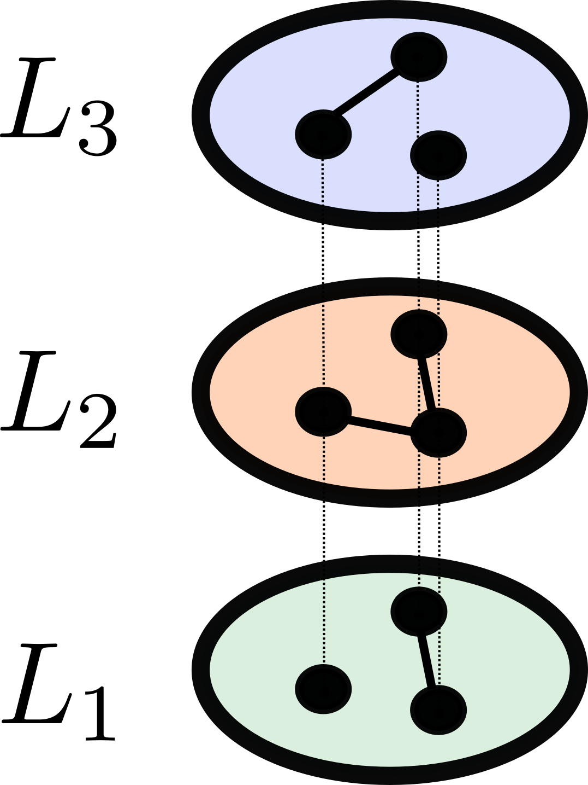

py3plex - key principles¶
py3plex is a general purpose multilayer analysis toolkit. Built on top of NetworkX, a widely usedy Python3 graph analysis library, it offers intuitive and efficient exploration of multilayer networks. Written in python3, it can be installed as simply as:
pip install py3plex
or
pip install git+https://github.com/skblaz/py3plex
The basic usage is discussed next. More or less all functionality revolves around the multinet class, which is imported as:
from py3plex.core import multinet
For the remainder of this documentation, we assume the datasets (from the home py3plex repo directory) is present along the code.
A 3min introduction¶

A network can be loaded by either using one of the many available parsers (below), or constructed using our functional API. Examples of loading the network: (See example files in the examples/ folder!) First, simple edgelists:
n1 n2
n3 n1
Such simple networks are the building block for multilayer structures, and can be loaded as:
multilayer_network = multinet.multi_layer_network().load_network("./datasets/test.edgelist",directed=False, input_type="edgelist")
However, this is normally not enough, and is not the main purpose of py3plex. Extension can be done by adding the layers and the weights, a single edge looks like (node layer node layer weight):
n1 l1 n2 l2 0.4
n1 l3 n3 l1 1
Note that the node and layer names are not necessarily int-encoded, although py3plex can also do that. Taking care of proper mappings is done under the hood, and as such abstracted away from the user.
The key object around everything evolves is the multilayer_network, initiated as follows (from some multiedgelist as discussed above):
multilayer_network = multinet.multi_layer_network().load_network("./datasets/multiedgelist.txt",directed=False, input_type="multiedgelist")
And that’s it! You’ve just learned to parse one of the most basic input types. Now, what can be done with this object?
One common step is to summarize what you are dealing with.:
multilayer_network.basic_stats()
See other chapters for more detailed functionality.
What about multiplex networks?¶
{kind=link}
Compared to multilayers, multiplex networks can be interpreted as the same set of nodes, projected across different contexts (one type of node, multiple possible, different edges between them). py3plex also supports parsing of multiplex networks, such as seen in the example below. Here, the input is expected to be in the form:
l n1 n2 w
For example:
multiplex_network = multinet.multi_layer_network(network_type = "multiplex").load_network("./datasets/simple_multiplex.edgelist ",directed=False, input_type="multiplex_edges")
Note the network_type argument? This can be set either at “multiplex” or “multilayer”. If multilayer is considered, no additional couplings between same-named nodes across layers will be added. However, in the multiplex case, such couplings are properly added.
More involved input schemes?¶
Sometimes having node-layer tuples is not enough, or not elegant enough. py3plex offers addition of arbitrary attributes to the constructed multilayer (plex) objects as follows.
1 2 3 4 5 6 7 8 9 10 11 12 13 14 15 16 17 18 19 20 21 22 23 24 25 26 27 28 29 30 31 32 33 34 35 36 37 | from py3plex.core import multinet
from py3plex.core import random_generators
## An example general multilayer network
A = multinet.multi_layer_network()
## add a single node with type
simple_node = {"source" : "node1","type":"t1"}
A.add_nodes(simple_node)
A.monitor("Printing a single node.")
print(list(A.get_nodes(data=True)))
## add a single edge with type
simple_edge = {"source":"node1",
"target":"node2",
"type":"mention",
"source_type":"t1",
"weight" : 2, ## add arbitrary attributes!
"sunrise_tomorrow" : True,
"target_type":"t2"}
A.add_edges(simple_edge)
A.monitor("Printing a single edge.")
print(list(A.get_edges(data=True)))
## multiple edges are added by simply packing existing edges into a list.
simple_attributed_edges = [{"source":"node1","target":"node6","type":"mention","source_type":"t1","target_type":"t5"},{"source":"node3","target":"node2","type":"mention","source_type":"t1","target_type":"t3"}]
A.add_edges(simple_attributed_edges)
A.monitor("Printing multiple edges")
print(list(A.get_edges(data=True)))
## Edges can also be added as lists: [n1,l1,n2,l2,w]
example_list_edge = [["node3","t2","node2","t6",1],["node3","t2","node2","t6",1]]
## specify that input is list, all else is recognized by Py3plex!
A.add_edges(example_list_edge,input_type="list")
print(list(A.get_edges()))
|
Hence, arbitrary data (structures) can be added to individual node-layer tuplets, offering additional flexibility. For example, adding temporal component is one of possibilities.